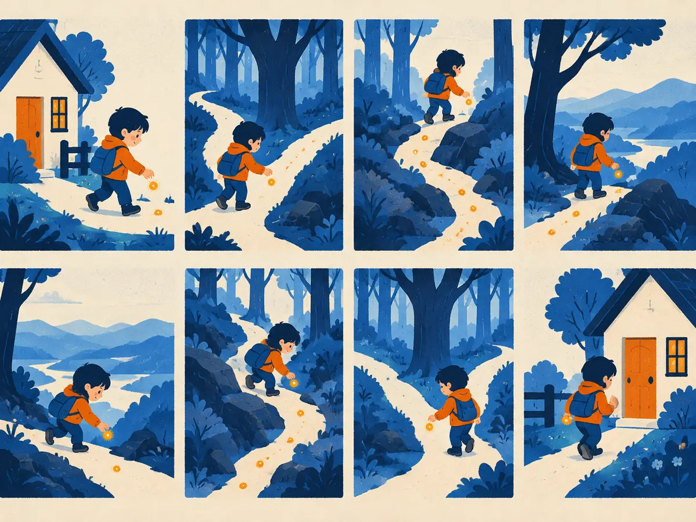

Tensors & autograd
Almost every LLM is trained in PyTorch, and PyTorch rests on two ideas: tensors, arrays of numbers that know their shape, type and device, and autograd, which watches what you compute and runs backpropagation for you.
By the end you can
- Create tensors and read their shape, dtype and device, and predict the shape of a broadcast result.
- Explain what
requires_grad,grad_fn,.backward()and.graddo. - Know when to use
torch.no_grad(), and why gradients must be reset.
Take your best guess. Being wrong now helps the right answer stick later.
A batch of 8 sequences, each 1,024 tokens long, each token a 4,096-number vector. What shape is that tensor?
- (4096,)
- (8, 4096)
- (8, 1024, 4096)
- (1024, 1024)
You call loss.backward() twice in a row (re-running the forward pass in between) without resetting anything. What's in w.grad?
- The gradient from the second call only
- The sum of both gradients
- Their average
- An error: gradients can only be computed once
.grad with +=. That's deliberate (it's how branches add up, P2.3) but it means you must zero gradients between training steps.Tensors: arrays that know their shape, type and device
A tensor is an n-dimensional array: a number (0-D), a vector (1-D), a matrix (2-D), or more. If you know NumPy, it's an ndarray that can also live on a GPU and track gradients.
import torch
x = torch.tensor([[1., 2., 3.],
[4., 5., 6.]])
x.shape # torch.Size([2, 3])
x.dtype # torch.float32
x.device # device(type='cpu')
torch.zeros(2, 3) # all zeros, shape (2, 3)
torch.randn(4, 8) # standard normal samples
torch.arange(6).reshape(2, 3) # [[0, 1, 2], [3, 4, 5]]Three attributes matter all the time:
- shape: the size of each dimension. In an LLM, token ids have shape (B, T) (batch, sequence length) and hidden states (B, T, d), with d the model width.
- dtype: the number format.
float32(4 bytes) is the default for floats, andint64(torch.long) for integers like token ids. LLM training mostly usesbfloat16(2 bytes) for speed and memory (M2.5): a 7-billion-parameter model's weights take about 14 GB in bf16 versus 28 GB in fp32. - device: where the data lives,
"cpu"or"cuda"(an NVIDIA GPU). An operation needs all its inputs on the same device; mixing them is one of the most common errors.
device = "cuda" if torch.cuda.is_available() else "cpu"
x = x.to(device) # returns a copy on that deviceOperations, reductions and broadcasting
Arithmetic works element by element (x + y, x * y, torch.exp(x)), @ is matrix multiplication, and reductions take a dim argument saying which dimension to collapse:
W = torch.randn(3, 4)
(x @ W).shape # (2, 3) @ (3, 4) -> (2, 4)
x.sum() # tensor(21.)
x.sum(dim=0) # tensor([5., 7., 9.]) down the rows
x.mean(dim=1, keepdim=True).shape # torch.Size([2, 1])When two tensors have different shapes, PyTorch tries to broadcast them: compare the shapes from the right, and in each position the sizes must be equal or one of them must be 1 (a missing dimension counts as 1). Size-1 dimensions are stretched to match. This is how adding a bias of shape (d,) to hidden states of shape (B, T, d) just works.
Autograd: backprop, automated
In P2.3 you ran backprop by hand. PyTorch does it for you. Mark a tensor with requires_grad=True and every operation that uses it is recorded in a graph as it runs. Each result carries a grad_fn, a node that knows how to compute its own local derivatives. Calling .backward() on a scalar walks that graph in reverse and stores $\frac{\partial\,\text{loss}}{\partial\,\text{leaf}}$ in each leaf's .grad.
x = torch.tensor(2., requires_grad=True)
w = torch.tensor(3., requires_grad=True)
y = w * x # y.grad_fn: <MulBackward0>
z = y + 1 # z.grad_fn: <AddBackward0>
loss = z ** 2 # tensor(49., grad_fn=<PowBackward0>)
loss.backward()
x.grad, w.grad # (tensor(42.), tensor(28.))Explain like I'm 5

A child walks into a forest and drops a glowing breadcrumb at every turn: "here I multiplied", "here I added". They don't need to plan anything; they just leave crumbs as they go.
When it's time to go home, they follow the crumbs backwards, one by one, all the way to the start. That's .backward(): the crumbs are the recorded operations, and walking back is backprop.
Where the analogy breaks: on the way back, each crumb also hands over a number (its local derivative), and the crumbs are swept away once you're home, so the next walk drops fresh ones.
Worked example
Check the code above by hand. $\text{loss} = (w x + 1)^2$ with $x = 2$, $w = 3$.
- Forward: $z = 3 \times 2 + 1 = 7$, loss $= 49$.
- $\frac{\partial\,\text{loss}}{\partial z} = 2z = 14$.
x.grad$= 14 \times w = 42$ andw.grad$= 14 \times x = 28$. ✓ Matches PyTorch.
Same code, but with x = torch.tensor(1., requires_grad=True) and w = torch.tensor(-2., requires_grad=True).
loss.item():x.grad:w.grad:- If you run the forward pass and
loss.backward()once more without resetting,w.gradbecomes:
Four rules that prevent most autograd bugs
.backward()needs a scalar. A loss is a single number (P2.1). (For a non-scalar you'd have to pass agradientargument, which you rarely need.)- Only leaves keep
.grad. Tensors you created withrequires_grad=True(in practice, model parameters) get.grad; intermediate results likeyandzdon't, unless you ask with.retain_grad(). The graph is freed afterbackward()to save memory. - Gradients accumulate. Each
backward()adds to.grad. Reset between steps withw.grad = Noneorw.grad.zero_(); optimizers do it withoptimizer.zero_grad()(P4.2). - Don't record what isn't part of the model. Weight updates and evaluation shouldn't build a graph. Wrap them in
torch.no_grad()(ortorch.inference_mode()for pure inference); use.detach()to get a copy of a tensor that is cut off from the graph.
with torch.no_grad():
w -= 0.1 * w.grad # an in-place update, not recorded
w.grad = None # ready for the next stepWithout no_grad(), that in-place update on a leaf that requires grad raises an error, which is PyTorch protecting you from recording the update itself.
loss.backward() fills .grad for billions of parameters, and the optimizer updates them inside no_grad. Shape and dtype discipline matter more than anything: most real bugs are a wrong dimension silently broadcast, or a tensor on the wrong device or in the wrong precision.What happens, step by step, between loss = model(x)... and w.grad holding a number?
grad_fn) in a graph, keeping the values it will need. loss.backward() starts at the scalar loss with gradient 1, walks the graph in reverse applying each node's local derivative (the chain rule), and adds the result into the .grad of every leaf, such as w. The graph is then freed.What is the shape of torch.ones(8, 1, 5) + torch.ones(3, 1)?
- An error: the shapes don't match
- (8, 1, 5)
- (8, 3, 1)
- (8, 3, 5)
After loss.backward(), which tensors have a populated .grad by default?
- Leaf tensors created with
requires_grad=True, such as model parameters - Every tensor in the computation
- Only the loss
- Only intermediate results
.grad. Intermediate tensors don't (unless .retain_grad()), which saves memory.Why wrap a manual weight update in torch.no_grad()?
- It makes the update use less precision
- It zeroes the gradients automatically
- The update isn't part of the model's computation, so it must not be recorded in the graph (and an in-place change to a leaf that requires grad would raise an error)
- It moves the tensor to the GPU
no_grad only switches off recording. Zeroing gradients is a separate step.In P2.3, a value used in two places got the sum of the gradients from both paths. Which PyTorch behaviour comes from the same rule?
- Tensors broadcasting to a common shape
.gradbeing accumulated with+=rather than overwritten.backward()requiring a scalar- The graph being freed after backward
zero_grad().Key takeaways
- A tensor is an n-D array with a shape, a dtype and a device; check all three when debugging.
- Broadcasting: align shapes from the right; sizes must match or be 1, and 1s stretch.
requires_grad=Truemakes autograd record operations;.backward()replays them in reverse.- Gradients land in leaves'
.gradand accumulate, so reset them every step. - Use
torch.no_grad()for updates and evaluation.
About 20 minutes on a free CPU: predict and check shapes, fix a broadcasting bug, compare autograd with your hand-derived gradients from P2.3, and fit a line using nothing but tensors and .backward().
Adding cards schedules your first spaced review.